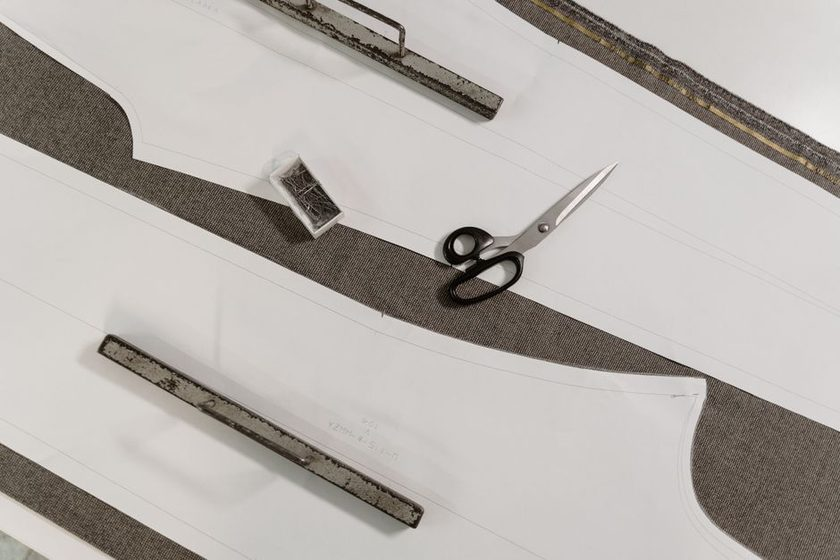

Why Measuring Over the Clothes You Actually Wear Changes the Block
A tape measure over bare skin and a tape measure over the clothes you'll actually wear rarely agree — and the gap is exactly where most blocks go wrong.

The tape said one thing, and the muslin agreed with it. Smooth across the front, side seam hanging plumb, no drag lines anywhere near the armhole. Then the blouse went on over the thin cotton tee that gets worn under everything, and reaching for a mug on a high shelf pulled the back tight enough to lift the hem out of the waistband. Nothing had been measured incorrectly. The measurement had simply been taken on a version of the body that never actually leaves the house.
A correct number and a garment that binds
Drafting systems are written against body measurements. That is a reasonable convention — bodies are the stable thing, and a bare tape reading is repeatable in a way that "over whatever I had on" is not. The trouble is that almost nobody wears a garment against bare skin. A shirt travels over a base layer. A jacket travels over the shirt. Every one of those layers occupies space that the outer garment has to find somewhere, and the drafting system was never told about them.
Ease charts try to cover this, but they cover it as an average. The allowance printed in a book assumes a typical undergarment and a typical fabric and a typical amount of reaching. If your habitual base layer is a heavy ribbed knit, or a lightweight woven camisole, or nothing at all under a summer dress, the average is quietly wrong for you in a direction you can't see until the seam is sewn. That is the sort of error worth solving once at the block rather than re-solving in every muslin — the argument behind the one-adjustment rule.
Take the same four measurements twice
The fix is unglamorous: measure twice and write both numbers down. Four places carry most of the difference — full bust, natural waist, upper arm, and across the back. Take each one bare (or over the thinnest thing you own and will never change), then dress in the layer you actually wear under that category of garment and take all four again, in the same order, with the same tension on the tape.
Keep both readings on one sheet, side by side. A single column of numbers with no note about what was worn becomes useless within a season, because you'll never remember whether that waist figure was taken over a sweater or in a bathroom mirror in July. Two columns and a one-line note about the layer solve it permanently.
A block drafted from a body you never dress is a block for a body that never shows up.
What a layer tends to add
The differences are smaller than people expect and larger than they can afford to ignore. Circumference measurements pick up roughly twice the thickness of the fabric, since the tape passes the layer on both sides of the body. Many people find a fine jersey tee adds only a whisper at the bust — the sort of amount that disappears into rounding — while a brushed fleece or a thick ribbed knit may add an inch or more around the same line. Sleeves are the place it bites first, because there is so little spare room in an upper arm to begin with.
| Measurement | Bare reading | Over the layer you wear | What the gap tends to mean |
|---|---|---|---|
| Full bust | Record here | Record here, note the layer | Often the smallest gap of the four over a thin knit; grows quickly under anything brushed or ribbed |
| Natural waist | Record here | Record here, note the layer | Picks up tucked-in hems and waistbands; many people find the dressed figure sits noticeably higher than the bare one |
| Upper arm | Record here | Record here, note the layer | Small in absolute terms, but the sleeve has the least spare room, so it tends to show first as binding when reaching |
| Across back | Record here | Record here, note the layer | Where the reaching-for-a-shelf complaint usually lives; a seam-heavy base layer may add more than a smooth one |
| Layer noted | — | Name the exact garment | "Grey ribbed tee" is a usable record; "a t-shirt" is not |
Which figure the block gets drafted from
The dressed figure. A block is a working tool for garments that will be worn in ordinary conditions, and the ordinary condition includes a base layer. Drafting from the bare number and then hoping the ease allowance absorbs the difference means the allowance is doing two jobs at once — covering the layer and covering movement — and it usually only has room for one.
When two layers compete
If your winter base layer and your summer base layer differ by a meaningful amount, the honest answer is that one block may not serve both. Many sewists draft to the layer they wear for most of the year and treat the other season as a separate variation, sized off the same master. Trying to split the difference tends to produce a block that is a little tight in one season and a little loose in the other.
Keeping the bare reading as a reference line
Don't throw the bare number away. It earns its place for three jobs:
- Comparing your figures against a commercial pattern's size chart, which is almost always written against body measurements rather than dressed ones — the groundwork for reading a commercial pattern against your own block.
- Checking whether a change over time came from the body or from a change of wardrobe. If the bare column holds steady and the dressed column moves, you changed base layers.
- Sanity-checking a suspicious measurement. When one figure looks wrong, the gap between the two columns is usually where the tape slipped.
A routine you can repeat
Comparability matters more than precision here. A number taken slightly loose every single time is more useful than a number taken perfectly once and differently thereafter.
- Lay out the exact garments you'll measure over before you start, and write their names at the top of the sheet. Same tee, same bra or base, same posture.
- Take all four bare readings first, in a fixed order, standing relaxed with arms down. Breathe out normally — not a held breath, not a deliberate slump.
- Dress in the noted layer and repeat the same four, same order, same tape tension. Two fingers under the tape at the waist is a habit worth keeping consistent.
- Write both columns and today's date on one line of the sheet. Record the difference too, even when it's zero — a zero you wrote down is data; a blank is a question.
- Re-measure on a schedule, not on a hunch, and always in the named clothes. Twice a year is enough for most people; anything more often mostly records the tape.
Once that sheet exists, the block stops being a guess. Adjustments trace back to a specific reading taken under specific conditions, which means a fitting change you make in March still makes sense in November. The same discipline shows up elsewhere in drafting — it's the reason seam allowance consistency outranks seam allowance size.
A note on these figures
These are notes from a home sewing workbook, written for people drafting their own blocks. Fabric weights, base layers, drafting systems and habits vary, so treat every quantity here as a starting point to test on your own muslin rather than a rule. Nothing on this page is professional fitting instruction, and no measurement described here says anything about a body beyond how much room a garment needs.